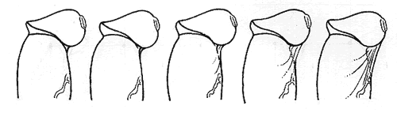

|
This was Philips original questionnaire with extra pictures, (my comments in Italics)
Back to Editted Version
Please help us establish the "normal" boundaries of the frenulums anatomy - how short does a frenulum have to be, to be diagnosed frenulum breve?
Unfortunately there are neither comparative nor statistical studies on the frenulum and its relationship with the foreskin. Thus there is currently no true medical knowledge neither about the anatomical norm nor about the anatomic boundaries within which the interplay of frenulum and foreskin is a normal and unproblematic one.
At present even those boys with a frenulum which could be diagnosed before puberty as being painful during erection, will not get treatment until after the youth starts to complain of pain, which may be as late as adulthood.
The practical problem is that pain is experienced on the erect penis, however doctors can only monitor the flaccid penis. We need to know which effects on the erect penis - are caused by which degrees of brevity on the flaccid penis.
At present we would like to hear from any man with an intact frenulum whether circumcised or not. Firstly if you have web cam facilities, we need a basic description of the erectile effects and a picture sidewards and from underneath of the flaccid penis (i.e. what the doctor would see).
Doctors will then be able to advise parents and children of the potential problems, whether this is "normal", whether the frenulum will inevitably be painful or rip or whether it is a borderline case.
In order to provide information which will serve as guidelines for further scientific enquiry please answer on a separate page : 1-24 2-Germany 3- anglo-saxon etc.
1. Age
2. Nationality i.e. ethnic provenience ( If you happen to be a mixture of various ethnic origins, please name them and write in parenthesis after each one their respective precentage)
do you mean province? or provenance - no-one understands the word ... question 2 and 3 ??? surely we need to know 2. Nationality: the nation where you grew up and live now. 3. The Race or ethnic origins ( If you happen to be a mixture of various ethnic origins, please name them and write in parenthesis after each one their respective precentage)
3. Race
a - Caucasian
b - Asian
c - Negroid
d - Old Mixture - Turkmene
e - Old Mixture - Aethiopian
f - Newer Mixtures - mulatto, mestizo, etc (Please state what!)
4. Penis status
a - I was never operated on the penis. ------CUT as a whole
b - I was operated on the penis due to ... (state the reason)
5. Foreskin status
a - My foreskin is intact
b - My foreskin is intact, but I went through a stretching scheme = programme
is the word you want
c - I had a preputioplasty i. e. several small parallel incisions which were
then sewed vertically or Z-plasty or Y-plasty
d - I had a dorsal slit
e - Low and loose circumcision
f - Low and tight circumcision
g - High and loose circumcision
h - High and tight circumcision
even I dont clearly understand the difference between e,f,g, and h, - there is a drawing which indicates the difference at circlist - should be a link actually on my pages but there isn`t - I think if this question is being asked we should establish a link to the information
I think we want to discuss personally with anyone who was circumcised who still has a short frenulum - it is such a rarity - I think with any of these operations - the men answering would fall outside the scope of the questionnaire, we have to open up the possibility of men simply writing personally and directly without answering any questions, and this possibility should be at the top of the page and the bottom.
6. Frenulum status
a - My frenulum is intact
b - My frenulum ripped, but healed well with no change.
c - My frenulum ripped once or several times due to sexual activity and thus
got shorter, although it healed allright.
d - My frenulum ripped once or several times due to sexual activity and thus
got longer, since the cut healed in a different way i.e. not vertically
but horizontally i.e. stretched.
e - My frenulum ripped once or several times due to sexual activity and got
medical attention, thus receiving stitches, but healed allright and with
no change.
f - My frenulum ripped once or several times due to sexual activity and got
medical attention, thus receiving stitches and ending up being shorter,
although it healed alright.
g - My frenulum ripped once or several times due to sexual activity and got
medical attention, thus receiving stitches and ending up being longer.
h - I had a frenuloplasty : simple cut through thin, membranous upper part of
frenulum and no stitches Tiny flaps of skin !
i - I had a frenuloplasty : simple cut through a thicker frenulum, horizontal
stretching and several stitches. No flaps of skin !
j - I had a frenuloplasty : Z-plasty or Y-plasty
k - I had a partial frenulotomy i.e. my frenulum was cut away at its thinner,
more membraneous part near the glans
l - I had a frenulotomy where the frenulum was completely cut out, a lot of
stitches where needed to fix the wound
WOW - But even I dont understand the difference between frenuloplasty and frenulotomy or Z and Y plasty - most people will not understand these differences - I`d like an explanation - whatever the explanation is, questions like "did you have horizontal or vertical stitches?" might be the best way to ask -
OK so there is a lot you could say about frenulum treatment and lets get it up in the right place on the frenulum treatment file .... lets explain to men what the difference is between Y and Z PLASTY (I`ve one historic picture of Z plasty (the first report) at the beginning of the treatment section of the frenulum studies which could be included) - lets describe the difference between frenulotomy and frenuloplasty - you understand it far better than me - why do some men have 6 or 7 horizontal scars and others have one long vertical??? -
7. If you had a ripping of the frenulum or a surgical intervention of any kind on either penis, foreskin or frenulum state how many years have passed since.
8. Personally do have the feeling that there is something which is not entirely correct with either your foreskin or your frenulum ?
9. Are you able to draw back your foreskin past the glans without any difficulties when your penis is in its erect state ?
10. Length of flaccid penis = length of penis, when it is completely flaccid and in its shortest size. During the measurement you should be standing and holding your penis at a 90° angle to your body when you are measuring it. Press ruler against pubic bone and measure from penis base to tip, though disregarding overhanging foreskin.
11. Lenght of erect penis = length of penis, when it is erect to its maximum. During the measurement you should be standing and holding your penis at a 90° angle to your body. Press a ruler against pubic bone and measure from penis base to tip of glans.
I dont know, but I think the question can be included. Firstly I think men will enjoy answering the question and secondly in the context of comparing measurements pre operation and post operation this might provide some very interesting evidence -
particularly if you are going to ask the following questions then the length seems necessary if only for completeness. The question is ... we need to know flaccid measurements, or we need to know how frenulum in all its different variations looks in the flaccid state - so do we need to know all the following questions when flaccid, hummm what hidden intention do you have ... when starting something like this then it must be done on intuition or perhaps you cant explain your hidden intentions ...
12. Circumference of the penis = circumference of the shaft of the penis, when the penis is erect to its maximum. Simply measure the diameter of the shaft where it is widest.
15. Circumference of the glans = circumference of glans, when the penis is erect to its maximum. Simply measure the diameter of the glans where it is widest. Usually this is the case at the corona.
Put the circumference measurements in order - I`ll run through a few English refinements later
14. Length of glans = length of glans, when the penis is erect to its maximum. Simply measure the length of the glans from corona to tip at the upper side of the penis.
you need to take the bold or thick print out of the following 2 questions to make them intelligable
16. The zone at the glans which is widest is ..... mm above the corona. If it is the brim of the glans i. e. the corona itself, then enter 0 mm !
13. The zone where the shaft is widest, is situated ...... mm behind the corona of the glans.
17. Type of glans covering : When Erect
|
|
|
|
|
|
a - Glans is completely covered. Foreskin overhangs.
b - Glans is completely covered, but foreskin doesn't overhang
c - Only tip of Glans i. e. pee hole or slit is not covered.
d - The glans is only covered to half its height.
e - The glans is completely exposed
18. Lengh of the riged band of the outer foreskin question needs completely rearranging
19. Length of the inner foreskin =length of the reddish, corallike skin that covers the shaft from the ridge of glans to the beginning of the ridged band of the outer foreskin. - change wording
20. Circumference of the "phimotic ring" = no inverted commas for phimotic ring
If you are able to retract your foreskin during erection - draw the foreskin of your erect penis back as much as you can. If you have a mild phimotic ring you will see a constriction zone on your foreskin which goes almost all around, forming a very slight hourglass appearance. Additionally the shorter your frenulum the bigger the obliquity of that constricted and "overstretched" zone, the phimotic ring. You may measure this tight ring in its obliquity or your may release some of the tension by letting your foreskin slide a bit forward so that the obliquity of the ring is reduced and measure then. You result should be more or less the same.
have changed bits of the question but result should be more or less the same.- sounds rather vague - I find something very ingenious about your following measuring method
If on the other hand your foreskin is wide you may measure the circumference of its narrowest zone with a flexible strip of cardboard (ca. 2 cm wide and 20 cm long). Role the cardboard into a small tube so that it fits between glans and foreskin and than let it expand in its circumference until you feel that your foreskin is really stretched out. Mark the point where the ends of the strip overlap, remove the cardboard strip and measure the marked length.
21. Frenulums upper point = point where the frenulum attaches to the glans or nearest to this. The best way to assert this point is to hold the glans between thumb and forefinger of your left hand, turn it around so you can see its underside and gently move the frenulum from one side to the other so that it stretches slightly sideways and you actually can see where it exactly starts. Although it makes no difference if you asses this point is indifferent to asses this point whether your penis is flaccid or erect, the latter may facilitate a correct assessment.
note: twisting the erect penis, could lead to injury - we need to phrase any examination carefully.
|
|
|
|
|
|
a - at the shaft of penis i. e. below the sulcus coronarius
b - at the sulcus coronarius i.e. the constriction below the glans
c - at the lower edge of the glans i.e. corona glandis
d - at mid glans i.e. between corona glandis and meatus
e - at the meatus
22. Frenulums lower point = point where the frenulum attaches itself to the foreskin or to the shaft of the penis. In order to assess this first pull your foreskin back down the shaft of the penis, preferably on its erect state, so that the frenulum is a bit overstretched and tense and turns whitish. CUT Then carefully inspect the frenulums lower area. (lower in which direction) CUT Look for the point where the frenulum splits up like a root into three or more branches, and thus goes over into the foreskin. If CUT...CUT you are able to completely withdraw retract your foreskin on the shaft of the penis you may not see any branching out splicing of the frenulum at all. The frenulum just smoothly goes over into the raphe. None the less, even in this case there is usually a definite point where the frenulum stops having its whitish appearance and completely looses its prominency. In a lot men the point where the frenulum ends is also the point where the thick frenular vein runs across the shaft. - Do you know "a lot"?? I believe you haven`t the experience can we say some
|
|
|
|
a - at the shaft of penis without forming any pleas I presume direct into
the raphe
b - at the foreskin, pulling it up in a broad angle (more than 90°)
c - at the foreskin, pulling it up in sharp angle (less than 90°)
sorry I dont understand the question
23. Length of frenulum = length of the frenulum from its upper point to its lower point. Measure it in milimeters.
sorry I dont understand how the question relates to the picture
24. Maximum extent to which you can pull your foreskin back in the erect state without any bending of the glans. On the upper side of the penis measure the gap of stretched foreskin i.e. from the glans brim till where it starts making fine pleas, or if no pleas are visible from glans until the constriction zone at the outer foreskin. The pictures below may help you visualize what the measurement is about.
a - 0 mm
b - 1 - 5 mm
c - 6 - 10 mm
d - 11 - 15 mm
e - 16 - 20 mm
f - 21 - 25 mm
g - 26 - 30 mm
h - more the 30 mm
25. Degree of bending of the glans when you pull the foreskin completely back while in the flaccid state. Hold the completely stretched foreskin with your left hand at base of penis, turning the penis around its axis by 90° so that you can see your frenulum sideways. Measure angle between the imaginary line of the penis shafts axis and a line that goes through the pee hole. The pictures below may help you in doing the correct measurement.

a - 0° ( No bending !)
b - 1 - 15°
c - 16 - 30°
d - 31 - 45°
e - 46 - 60°
f - 61 - 75°
g - 76 - 90°
h - more then 90°
26. Prominency of the frenulum = When the penis is erect and the foreskin stretched to its maximum without bending the glans, how high is the frenulums bridging at the sulcus ?
The sequence of pictures below may help you in making the correct measurement.

a - 0 mm
b - 1 mm
c - 2 mm
d - 3 mm
e - 4 mm
f - 5 mm
g - 6 mm
h - more then 6 mm
27. Thickness of the frenulum = With your penis in a flaccid state and turned around its axis by 90° so that you can see your frenulum sideways, draw your foreskin back past the glans holding it with your left hand if necessary, and than with the thumb and index of your right hand pull your frenulum at its base away from shaft and so that it stretches a bit out vertically to the shaft. If it is thin enough you may see a lot of small red capillaries shinning through the translucent membranous frenulum. Measure thickness of frenulum with a ruler in mm.

|
|
|
|
|
|
a - less then 1 mm
b - 1 mm
c - 2 mm
d - 3 mm
e - more then 3 mm
28. While stretching the frenulum out and measuring its thickness, did you observe a chordeelike, larger brim at the edge or was the brim normal i.e. a simple unenlarged skin fold
a - normal brim
b - chordeelike, enlarged brim or hem
29. Tension on the frenulum when the penis is erect and the foreskin drawn back past glans but without holding it. Try to ascertain the tension by tipping the frenulum slightly with your forefinger at its most proeminent site - usually its bridging part between glans and shaft.
a - No tension : frenulum feels smooth and can be pressed in.
b - Little tension : frenulum feels smooth but can't be pressed.
c - Definite tension : frenulum is paler and feels stretched.
d - A lot of tension : frenulum is whitish and is really taunt.
e - Extreme tension : frenulum is white, really taunt and hurts.
30. Phimotic ring : With your penis in the erect state and the foreskin drawn back past glans so that the frenulum is stretched but not over stretched i. e. the glans should be bent not even a bit. If you are not sure how much you should stretch, it is better to stretch less,
If you look at the zone at the shaft of penis where the prepuce is most constricted. You may recognise the phimotic ring
a - No constriction zone is observable
b - A very slight constriction i. e. silhouette of penis shaft shows a 1 mm
indent on each side.
c - A slight constriction i. e. silhouette of penis shaft shows a 2 mm indent
on each side.
d - A definite constriction i. e. silhouette of penis shaft shows a 3 mm indent
on each side.
e - A bigger constriction i. e. silhouette of penis shaft shows more then 3
mm indent on each side
Please send your answers to the following e-mail address :
@male-initiation.net
Example of an answering sheet :
1. 25
2. Italian (50%) ; German (50%)
3. a
4. a
5. a
6. a
7. -- (since there was neither ripping nor surgery of any kind )
8. b
9. 10 mm
10 38 mm
11. a
12. b
........ something missing from your text?
28. b
29. b
30. b
Additional remarks : ........
we need some other way of answering. It would be tricky to set up a questionnaire formular but I feel you need single word answers which are unmistakeable as much as possible rather than a,b,c,d,e so that we and the writer can read the sense in his own answers - for example your own answers 8 to 12 must refer to different questions they are in the wrong place!